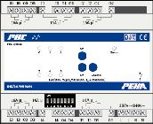
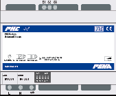

Phc Modules
Intro~
The PHC (PEHA Home Control) domotic system knows a fair amount of different modules,
where each module:
- is identified by a physical module type (phy)
- has a derived logical module type (log)
- communicates via a binary protocol
- has a specific amount/type of channels (input/output/feedback)
- belongs to a module class (input/multifunction/output/analog/box/dimmer)
- has a settable address via DIP switches (0-31)
- has a dedicated set of supported commands and generated responses
Within a module class there are 32 adddresses (0-31) available, each module needs to be mapped to a unique address within it's class, otherwise conflicts will occur. Note that some modules use multiple addresses to cover it's functionality.
Phc2Mqtt is a two-way translator between the module's binary protocol and a textual user interface.
As such Phc2Mqtt needs to know the physical module types to correctly encode/decode the binary packets to/from any PHC modules.
On the user interface side it offers a textual command/response format that uses the logical module types (log), this way the user does not need to worry about the real physical module types.
Following shows the relation between module class and logical module type:
| Class | Logical Module Types |
|---|---|
| (0) Input modules | imd, imw, tab, et0 |
| (1) Multifunction modules | utm, bwm, uim, et1, mcc |
| (2) Output modules | omd, omx, jrm |
| (3) Analog modules | amd, fui, fu1, fu2 |
| (4) Box modules | ebs, ebr, ebd, mls |
| (5) Dimmer modules | dim, dal |
Project Information~
Proxy Mode~
When running Phc2Mqtt in Proxy mode it will passively listen on the PHC module bus to report activity and send commands to the real STM that will handle protocol details for communication with the PHC modules.
In this mode Phc2Mqtt needs following information per module:
- physical module type
- module address setting
PassiveSTMv3 Mode~
When running Phc2Mqtt in PassiveSTMv3 mode the module list is required but not enough.
In this mode Phc2Mqtt takes over the role of the STM and it needs additional information, this requires some explanation:
- The PHC module bus is slow (19200 baud) and shared by all modules
- The binary protocol tries to reduce the number of packets sent over it to avoid contention
- When a PHC module starts it will do only 1 thing: send a boot packet to it's master (STM)
- The STM responds with a config packet, now the module knows which events to report to STM
- After that the PHC module will report the enabled events to STM
Configuration~
The module and optional channel/event list can be provided in several ways:
- by uploading the project definition from the System Software v3 to Phc2Mqtt via the management interface
- by extracting project.ppfx from the project.zpfx file and then uploading it manual (only for Proxy mode)
For now we will rely on the project upload by the System Software v3, in case this is problematic the alternative method can be used. Please contact support for assistance.
Module Overview~
Below table lists all PHC modules, their physical and logical module types, their image and manual.
| Phy | Log | PHC product | Description/Module definition | Image(Manual) |
|---|---|---|---|---|
| EMD24 | imd | 940/24EM | Input module 24 V | |
| EMD_RUE | imd | 940/24EM RU 940/24EM RU diag |
Input module 24 V LED | |
| EMD_24S | imd | 941/24 EM | Input module 24 V switch | |
| EMD230 | imd | 940/230 EM | Input module 230 V | |
| UEM_1 | imw | 940/24 EM UP o.T. | Flush mount input module 24 V DC | |
| UEM_2 | imw | 940/24 EM RU o.T. | Flush mount input module with LED |  |
| UEM_2 | imw | OpenHC UEM | Flush mount input module with LED |  |
| ET0-2 | et0 | 940/2.xx ET(B) | Flush mount push button 2 fold | |
| ET0-4 | et0 | 940/4.xx ET(B) | Flush mount push button 4 fold | |
| ET0-8 | et0 | 940/8.xx ET(B) | Flush mount push button 8 fold | |
| ET0-D | et0 | 940/8.xx ET D | Flush mount push button 8 fold with display | |
| EMD_TAB | tab | 941/16 TAB | Indicator- and control panel (16 push buttons) |  |
| EMD_TAB_2 | tab | 941/32 TAB | Indicator- and control panel (32 push buttons) | |
| EMD_VIR | imd | - | Virtual input module | - |
| UTM_1.0 | utm | 941/1 UP o.A | Push button, 1-fold | |
| UTM_2.1 | utm | 941/2 UP o.A | Push button, 2-fold | |
| UTM_3.2 | utm | 941/4 UP o.A | Push button, 4-fold | |
| MFM_BWM | bwm | 410 BM o.A | Flush - mounting motion detector 180degr | |
| UIM | uim | 941 UP o.A | Infrared module | |
| ET1-2 | et1 | 940/2.xx ET(B) | Flush mounting push button 2 fold |  |
| ET1-4 | et1 | 940/4.xx ET(B) | Flush mounting push button 4 fold |  |
| ET1-8 | et1 | 940/8.xx ET(B) | Flush mounting push button 8 fold |  |
| ET1-D | et1 | 940/8.xx ET D | Flush mounting push button 8 fold with display |  |
| MCC_2 | mcc | 940 MCC | Multi Control Center (MCC) | |
| AMD230_4 | omd | 940/4 AM 940/4 AM diag |
Output module 230V/4A | |
| AMD230_10 | omd | 940/10 AM 940/10 AM diag |
Output module 230V/10A | |
| AMD230_16 | omd | 940/16 AM | Output module 230V/16A | |
| ALP | omd | 940/24 AM | Output module 24V | |
| AMD_EVG | omd | 941/10 AM | Output module 230V/EVG | |
| AMD230_4_man_ext | omx | 942/4 AM 942/4 AM diag |
Output module 230V/4A diag | |
| AMD230_10_man_ext | omx | 942/10 AM 942/10 AM diag |
Output module 230V/10A diag | |
| AMD230_16_man_ext | omx | 940/16 AM MAN | Output module 230V/16A manual |  |
| JRM24 | jrm | 940/24 JRM | Shutter/ blind module 24V | |
| JRM | jrm | 940 JRM 940 JRM DIAG |
Shutter/ blind module 230V | |
| AMA(phc/ama.md) | amd | 940 AMA | Analogue module | |
| MFM_FUNK | fui | 940 FU C | RF- interface (Easyclick) | |
| MFM_FUNK1 | fu1 | 940 FU | RF- interface I/O (Easywave) | |
| MFM_FUNK2 | fu2 | 941 FU C | RF- interface I/O (Easyclick) | |
| OBO_1 | ebs | 960/3 PSB | System box switching |  |
| OBO_2 | ebr | 960/3 PSB/JR | System box shutter |  |
| OBO_3 | ebd | 960/3 PSB/D | System box dimming (1-10V) | |
| DIM_AN | dim | 944/2 DIM AN | Forward phase control dimmer 420W | |
| DIM_AB | dim | 944/2 DIM AB | Inverse phase control dimmer 420W | |
| DIM_AN1000 | dim | 949 DM M-AN | Forward phase control dimmer 1000W | |
| DIM_AB1000 | dim | 949 DM M-AB | Inverse phase control dimmer 1000W | |
| DIM_SAN | dim | 944/2 DM AN 949 DM M-AN |
Synchronized forward phase control dimmer | |
| DIM_SAB | dim | 944/2 DM AB 949 DM M-AB |
Synchronized inverse phase control dimmer | |
| DIM_UNI | dim | 949 DM UN | Universal dimmer |  |
| DIM_DALI_8_EXT | dal | 940/8 DALI-G | DALI-Gateway (8-channels) |
{kind=link}